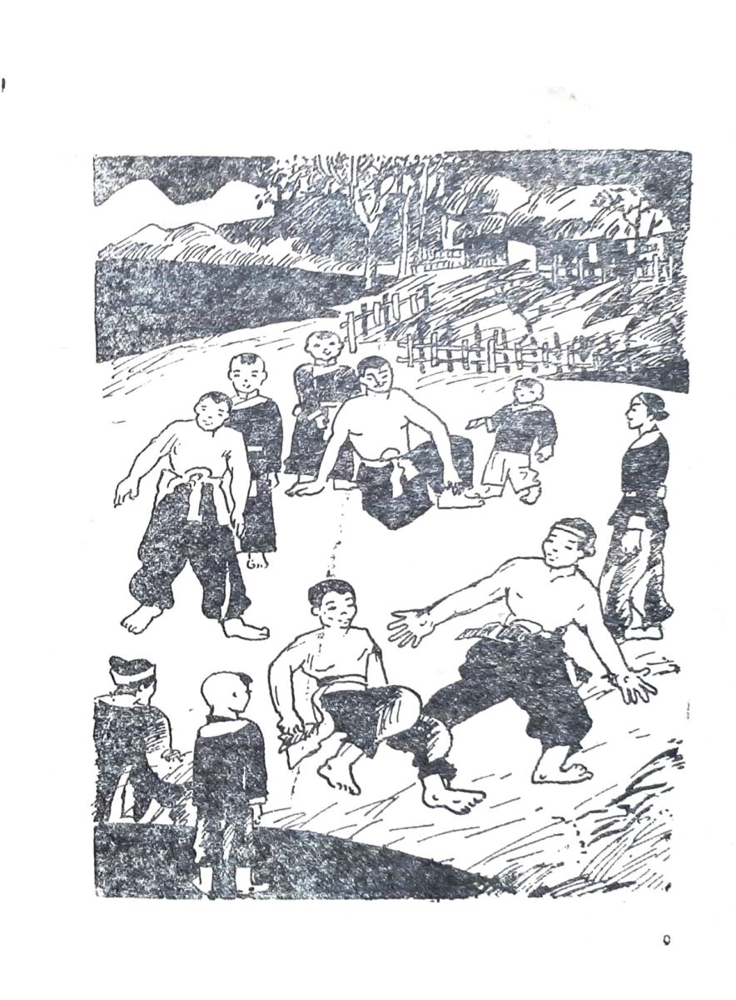

Ở đất Tây Sơn, bốn bề rừng núi, thú dữ rất nhiều. Rắn độc, hổ báo thường đi kiếm ăn ven đường. Vì thế người Tây Sơn rất chuộng võ nghệ. Ngay đàn bà con gái cũng biết vài miếng giữ mình. Mấy anh em Nguyễn Nhạc đều học võ từ nhỏ. Hằng ngày họ vẫn đấu tay đôi. Trong ba anh em, cậu Tư Lữ có vóc người thấp nhỏ nhất. Trong những cuộc đấu với hai anh hoặc với những người khác. Út Lữ thường bị thua thiệt.
Có một lần, Út Lữ đấu với Nguyễn Nhạc. Trận đấu bề ngoài xem ra gay go nhưng thực ra bắp tay Út Lữ chạm bắp tay Nguyễn Nhạc như chạm cột. Tay Út Lữ ngắn hơn tay anh, chân Út Lữ ngắn hơn chân anh. Vì thế đòn Lữ chưa tới đích thì đối phương đã đặt tay đặt chân lên người Lữ rồi. Nguyễn Nhạc bảo em:
-Học võ cứ to cao đã được một nửa rồi. Em vóc người bé nhỏ phải chịu thua thiệt là đúng thôi.
Nguyễn Lữ chịu không cãi lại được nhưng anh nghĩ: ‘‘ Nếu vậy thì những người bé nhỏ còn học võ làm gì nữa?’’
Câu hỏi đó làm cho Út Lữ mất ngủ nhiều đêm.
Vùng Quy Nhơn có tục nuôi gà nòi và tục chọi gà. Cả một phủ rộng lớn từ ven biển lên tới bìa cao nguyên chỗ nào cũng có gà nòi. Những lúc rảnh việc đồng áng, người ta lại đem gà ra chọi tập với nhau, còn đến phiên chợ huyện là cho gà chọi thi.
Út Lữ rất thích xem chọi gà. Những phiên chợ An Khê bao giờ cũng có mặt Út Lữ. Cậu đi chơi chợ chỉ là phụ, còn cái chính là đến xem chọi gà.
Lần này Út Lữ được xem một trận gà mà cậu nhớ mãi. Hai con gà đều là gà nòi nổi tiếng đến nỗi có cả biệt hiệu. Một con là con Tía siêu đao. Sở dĩ có tên thế vì lông nó màu tía, còn cặp cựa của nó quớt lên như đôi siêu đao. Khi nó tung hai chân lên đá đối phương, cặp cựa của nó màu tía, còn cặp cựa của nó quớt lên như đôi siêu đao.
Khi nó tung hai chân lên đá đối phương, cặp cựa của nó chém rất ác liệt. Còn con gà kia cũng có một biệt hiệu nghe kêu không kém nó là con Ô quạ tha. Màu lông nó đen nhưng nhức và thuở nhỏ nó quả có bị quạ tha thật. Lúc đó nó mới bằng nắm tay, một con quạ sà xuống quắp được nó bay lên. Chủ nhà nhặt đất đá ném theo, miệng hò la inh ỏi. Quạ sợ, sểnh chân để gà rơi từ trên cao xuống sân, nằm giãy đành đạch tưởng đi đứt. Sau nó hồi dần, lớn lên, nhưng có lẽ vì cái rơi lúc trước đâm chột nên nó còi cọc mãi rồi cũng chỉ thành một con gà nòi bé nhỏ. Nhưng ai biết xem tướng gà nhìn đến con Ô quạ tha cũng phải kêu lên mà khen. Mắt nó nhỏ như mắt chim cắt. Mỏ nó ngắn mà khỏe, hơi khoằm lại như mỏ diều hâu. Hai hàng vảy chân đàng trước đều tăm tắp nhưng ở gần cuối chỗ giáp tới ngón chân giữa có hai cái vảy kẹ rất bé giắt vào. Người ta bảo đấy là vảy cáo. Con gà nào có vảy cáo là con gà có miếng đá cực hiểm, cực dữ dội, chuyển thua thành thắng. Út Lữ xem con Ô quạ tha khen nức nở nhưng rồi lại chê một câu:
-Ô ơi! Tướng mày đẹp thật, dáng mày hùng thật, nhưng chỉ tiếc cái tầm nhỏ bé của mày thôi. Mày phải biết đấu gà cũng như đánh võ, cứ to khỏe đã kể được một nửa rồi. Còn cái nửa kia, cái nửa miếng đòn thế đánh thì con Tía siêu đao nó chẳng kém cạnh gì mày đâu.
Thế là Út Lữ đánh cuộc con Ô quạ tha …thua.
Trận đấu ước là trong năm hồ. Người ta thắp lên một nén hương, hễ cứ hết một đốt ngón tay là được một hồ lại cho gà nghỉ một lát. Vào hồ đầu, hai con gà giao cần cổ. Cả hai con đều giỏi đá buông, chúng không cần mỏ mổ vịn, cứ tung chân lên buông những cái đá chắc nịch. Đôi cựa quớt siêu đao của Tía chém lia như chớp. Hồ đầu huề nhưng Ô quạ tha cũng đã kém vài đá. Hồ thứ hai, cái to cao của Tía siêu đao mới tỏ ra lợi hại. Tía tung chân đá sập xuống, nó đá liên tiếp dồn con Ô lùi tới tấp. Người chung quanh tính con Ô đã sút một nửa rồi. Hồ thứ hai và hồ thứ ba, thứ tư không khác nhau bao nhiêu. Con Tía cứ đánh, con Ô cứ lì ra chịu đòn. Nhưng đến giữa hồ thứ năm thì Ô thay đổi đột ngột. Nó lượn quanh con Tía buộc con Tía phải quay theo rồi thình lình buông một đá quặt vào mang tai Tía. Tía bị hai đá quặt như thế liền còn chưa lại hồn thì con Ô trầm thấp đầu xuống, ngước mỏ níu lấy hầu con Tía và đá hất ngược lên. Cái đá này quả là cái đá của gà có vãy cao, nó khô gọn, nhanh và ác liệt đến nỗi chỉ nghe tiếng chân con Ô bật đánh bịch một cái là con Tía siêu đao đã lăn quay ra nằm giãy.

.Người ta ùa vào bế gà, con Tía ngáp vài cái rồi rướn mình duỗi hai chân ra. Nó đã bị đá đức hầu rồi.
Út Lữ thua cuộc trận gà này nhưng cậu tư lự mãi. Té ra không phải lo cao đã kể được một nửa. Con Ô quạ tha giỏi thật. Út Lữ theo con Ô mấy trận chọi nữa, xem Ô đá ngược, đá quặt, xem nó trầm thấp, đi nghiêng… trong đầu Út Lữ dần dần hình thành những đòn đánh mới.
Một năm sau, trong một trận đấu tập với hai anh, Út Lữ làm mọi người kinh ngạc. Những thế tấn trầm thấp, cách lượn của cặp chân, cách đánh quặt của đôi tay, cách đá thuận, đá ngược của đôi chân… có thể nói cách đánh của Út Lữ đã khiến cho hai anh mình phải gắng sức lắm mới giữ huề được với võ sĩ em có tầm vóc thấp nhỏ hơn mình nhiều.
Út Lữ đặt tên cho bài võ của mình là Hùng Kê quyền -Bài quyền Gà.